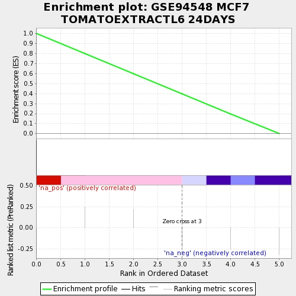
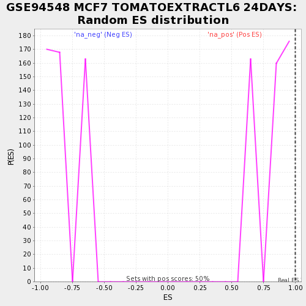

| | | Dataset | testA |
| Phenotype | NoPhenotypeAvailable |
| Upregulated in class | na_pos |
| GeneSet | GSE94548 MCF7 TOMATOEXTRACTL6 24DAYS |
| Enrichment Score (ES) | 1.0 |
| Normalized Enrichment Score (NES) | 1.2419114 |
| Nominal p-value | 0.0 |
| FDR q-value | 0.8924406 |
| FWER p-Value | 1.0 |
Table: GSEA Results Summary

Fig 1: Enrichment plot: GSE94548 MCF7 TOMATOEXTRACTL6 24DAYS
Profile of the Running ES Score & Positions of GeneSet Members on the Rank Ordered List
| PROBE | GENE SYMBOL | GENE_TITLE | RANK IN GENE LIST | RANK METRIC SCORE | RUNNING ES | CORE ENRICHMENT | | 1 | PRPF4B | | | 0 | 0.469 | 1.0000 | Yes |
Table: GSEA details [plain text format]

Fig 2: GSE94548 MCF7 TOMATOEXTRACTL6 24DAYS: Random ES distribution
Gene set null distribution of ES for GSE94548 MCF7 TOMATOEXTRACTL6 24DAYS